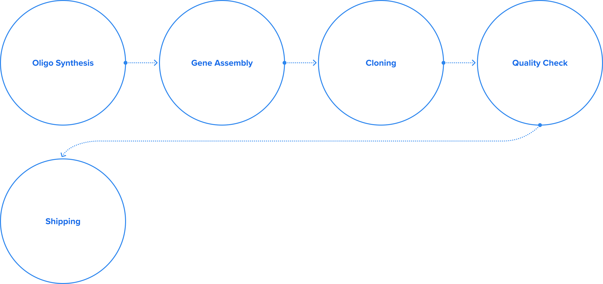

@@include('../../html/include/component/header.html')
@@include('../../html/include/common/breadcrumb-white-depth3.html',{
"depth1": "Business",
"depth2": "Research",
"depth3": "GENE SYNTHESIS",
})
GENE SYNTHESIS
The gene synthesis service synthesizes genes according to the
customer’s gene sequence order.
It is widely used in areas where recombinant DNA is studied, such as vaccine manufacturing, gene treatment, and character expression.

Macrogen’s gene synthesis service provides synthesis services for genes in a plasmid DNA state with a free cloning service, as well as DNA sequencing. Clients can use a wider range of synthesis services via the mutagenesis service. Moreover, a 100% sequence is guaranteed based on ABI 3730xl sequencing equipment and convenient ordering. Inquiries for quotations are possible through LIMS (Laboratory Information Management System).
Features
- Free cloning service (Macrogen standard vector)
- 100% sequence guaranteed using ABI 3730xl
- Mutagenesis service available
- Provided as plasmid DNA
- Free sequencing provided
- Quotation and orders available based on LIMS (Laboratory Information Management System)
Workflow
